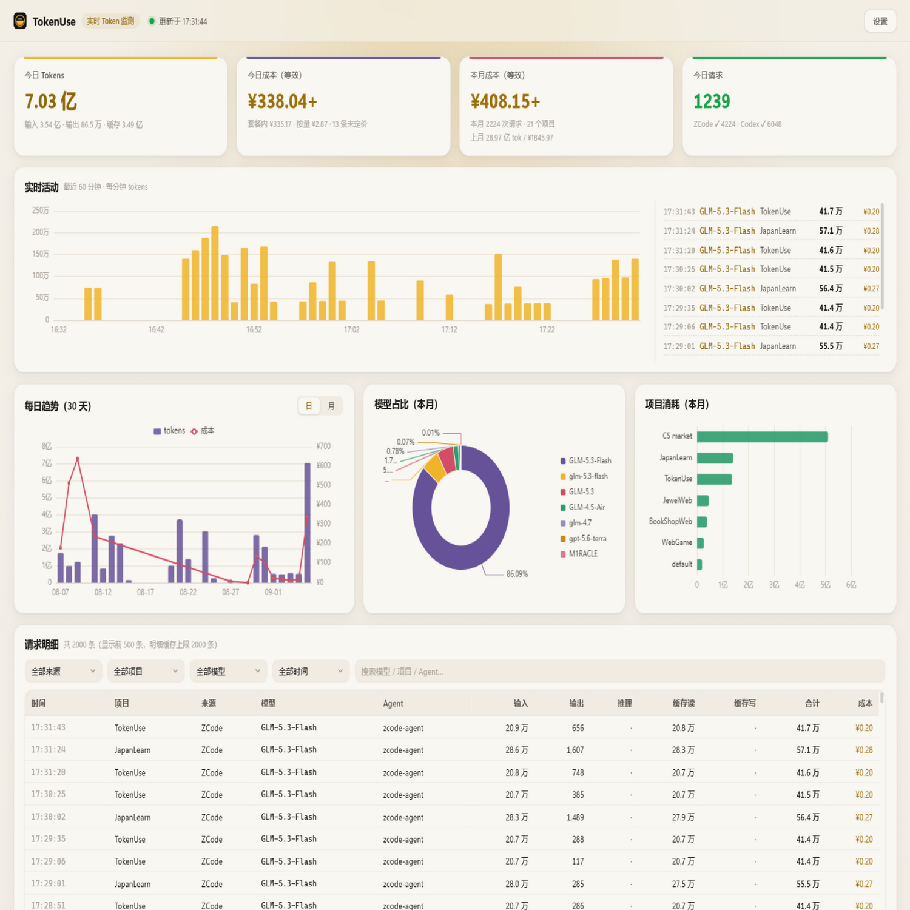
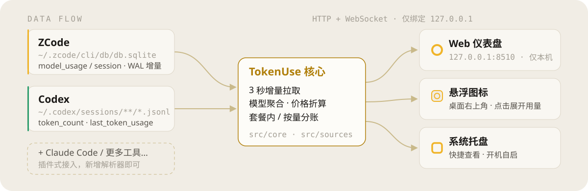

四源统一采集
ZCode SQLite、Codex 会话 JSONL、OpenCode SQLite、Cursor state.vscdb 插件化接入。缺一个源不影响其他源继续工作。
- ZCode
- Codex CLI
- OpenCode
- Cursor
Windows · 本地优先 · MIT
只读采集 ZCode、Codex CLI、OpenCode、Cursor 的本地数据，每 3 秒增量刷新， 折算等效金额。Web 仪表盘 / 悬浮图标 / 系统托盘三处常显，数据不经过任何第三方。

核心能力
TokenUse 不写入你的工具数据，只把已经在本机的用量算清楚、看实时。
ZCode SQLite、Codex 会话 JSONL、OpenCode SQLite、Cursor state.vscdb 插件化接入。缺一个源不影响其他源继续工作。
默认每 3 秒检查本地文件变化，只读增量数据，实时曲线与请求明细同步更新。
内置价格表按每 1M token 计价，缓存读走折扣；可覆盖自定义价，也可从 LiteLLM 价格库更新。
只读、不写入、不加锁。默认仅监听 127.0.0.1；开启共享后才绑定局域网并强制令牌鉴权。
桌面右上角 44×44 常驻图标，点击展开今日/本月用量；系统托盘同步显示状态。
同一 Wi-Fi 下开启「手机访问」，扫二维码即达同一份数据。iOS 可添加到主屏幕作独立窗口；令牌泄露可一键重置。外网可搭配 Tailscale 组私有网。
工作流
安装版或便携版任选。首次运行如遇 SmartScreen，点「更多信息 → 仍要运行」。
应用只读你本机已有工具的数据路径；未安装或未产生用量的源会显示未就绪，不阻塞其他源。
Web 仪表盘、悬浮图标、系统托盘；需要时扫码把同一份数据带到手机。

数据证明
这里不堆砌虚构评价。下面是可核验的项目事实与边界说明。
4
已接数据源
ZCode · Codex CLI · OpenCode · Cursor
3s
默认轮询间隔
可在设置中按秒调整
2000
请求明细缓存
聚合数字仍基于全量统计
MIT
开源协议
源码公开，可自由审计与二次开发
TokenUse 按内置/自定义价格表折算，帮助你心里有数；它不是厂商账单。
匹配不到价格的模型会统计 tokens，金额显示 —。
Cursor 本地库字段随版本变化，可能缺少完整输入/输出拆分，请视为近似统计。
立即开始
安装版含开始菜单快捷方式；便携版单文件直接跑。需要本机对应工具已产生数据，仪表盘才会显示用量。
TokenUse.Setup.*.exe
安装版
TokenUse.*.exe
便携版
FAQ
不会。它只读取本机工具已写下的用量数据文件，聚合后在本地提供 HTTP/WebSocket 服务。默认只监听本机回环地址。
不能。金额按价格表折算，缓存读有折扣，套餐内与按量可区分标注；请以厂商真实账单为准核价。
可以。数据源相互独立；只使用 Cursor 时只统计 Cursor 可读字段，其他源会显示未就绪。
局域网扫码即可。若要出门在外查看，可让 PC 与手机都加入 Tailscale 等私有网，访问同一服务地址；令牌鉴权逻辑不变。
当前发布面向 Windows 10+。代码为 TypeScript/Electron，跨平台改造属于后续方向，欢迎关注仓库动态。
克隆仓库后 npm install，npm start 构建并启动开发模式；新增数据源可在 src/sources/ 添加解析器。协议为 MIT。